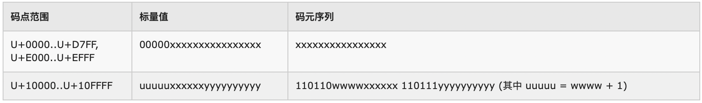
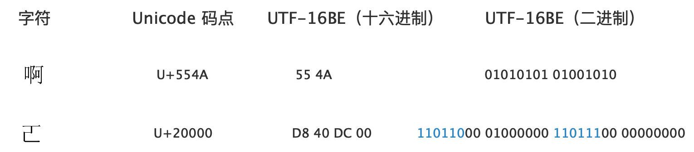
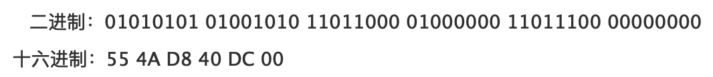
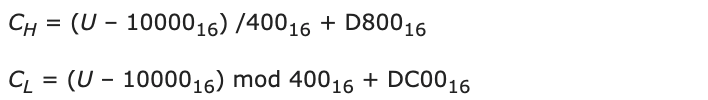
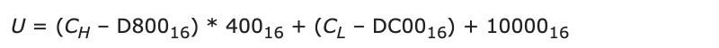
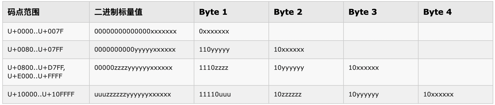
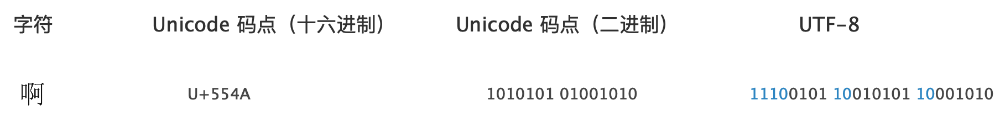

Character Encoding (Part 4): UTF
In the previous article, Character Encoding (Part 3): Unicode, we discussed the Unicode standard and mentioned its three implementation forms: UTF-16, UTF-8, and UTF-32. This article dives into the implementation details of each.
UTF stands for Unicode Translation Format, corresponding to the third and fourth layers of the character encoding model (Character Encoding Form and Character Encoding Scheme). UTF is responsible for storing Unicode code points in the computer using specific code units.
The X in UTF-X indicates the code unit width in bits. For example, UTF-16 uses 16-bit code units.
UTF-16
Unicode was originally designed as a fixed-width 16-bit encoding. In this scheme, the Unicode scalar value (code point) and its code unit representation in the computer are identical.
For example, the Chinese character "å" (ah) has the Unicode code point 554A. Its code unit representation is also 55 4A (binary: 01010101 01001010).
This representation is simple and fast — no flag bits, no conversion needed. That's why Unicode originally chose fixed two-byte encoding.
However, this can only represent 2¹⁰ = 65,536 characters. The Unicode Consortium soon realized that two bytes couldn't accommodate all the world's characters. The encoding space was expanded to 0–10FFFF. The original representation was no longer viable.
They improved UTF-16.
The improved UTF-16 uses variable-length encoding: one or two code units per character. Specifically, characters in the Basic Multilingual Plane (BMP, range 0000–FFFF) use one code unit; characters in supplementary planes use two code units.
But here's a problem: when parsing a text, how does the program know whether a given code unit (16 bits) represents a single character, or whether it's paired with another code unit to represent one character?
For example, given the byte sequence 01001110 00101101 01010110 11111101, should the program parse this as two characters (one code unit each) or something else?
We encountered a similar problem with GB 2312. To be compatible with ASCII, GB 2312 uses one byte for ASCII characters and two bytes for others. To distinguish whether a byte stands alone or pairs with an adjacent byte, GB 2312 uses the highest bit as a flag: if the highest bit is 0, it's a standalone ASCII character; otherwise, it pairs with the next byte.
UTF-16 (and UTF-8, discussed later) solves this similarly: the top n bits of each code unit serve as flag bits, indicating whether the code unit stands alone or pairs with another. The improved UTF-16 code unit looks like: xxxxyyyyyyyyyyyy, where x represents flag bits and y represents actual data. The program uses the x values to decide how to process the code unit.

Unicode's maximum code point is 10FFFF, which in binary is 1 0000 1111 1111 1111 1111 (21 bits). Values up to FFFF (binary: 0000 0111 1111 1111 1111 — note the top 5 bits are all 0, only the lower 16 bits vary) can use a single code unit. Values above FFFF need two code units, shaped like: xxxxyyyyyyyyyyyy xxxxyyyyyyyyyyyy.
When using two code units, we need:
- The flag bits (
x) must have some fixed pattern so the program can identify them; - The data bits (
y) must hold enough values: 10FFFF - FFFF = 100000 (decimal: 1,114,111 - 65,535 = 1,048,576); - The two code units' flags must differ so the program knows which comes first.
1,048,576 = 1024 × 1024, so we need 10 bits for y in each code unit (2¹⁰ = 1024), giving 1024 × 1024 combinations across two code units. That leaves 6 bits (16 - 10) for flag bits.
Here's the UTF-16 two-code-unit structure:
High surrogate: 110110yy yyyyyyyy (D800-DBFF)
Low surrogate: 110111yy yyyyyyyy (DC00-DFFF)
Since the flag bits have fixed values, each code unit can express 1024 (2¹⁰) values. These necessarily conflict with some BMP values, so 2048 BMP values (1024 per code unit) must be reserved and not assigned as code points.
Unicode reserves D800–DFFF (2048 values including both endpoints) in the BMP exclusively for UTF-16. These values cannot be assigned as character code points.
Of these 2048 values:
- The first 1024 (D800–DBFF) are called high surrogates, corresponding to the left code unit;
- The next 1024 (DC00–DFFF) are called low surrogates, corresponding to the right code unit.
Together, they form a surrogate pair. UTF-16 uses surrogate pairs to encode supplementary plane characters.
D800–DBFF values all begin with 110110 in binary (the top 6 bits), so the high surrogate code unit uses 110110 as its flag. DC00–DFFF values all begin with 110111, so the low surrogate uses 110111 as its flag.
For example, how should the program parse this code unit sequence?
01010101 01001010 11011000 01000000 11011100 00000000
As UTF-16, there are three code units total:
- First code unit (
01010101 01001010): doesn't start with11011, so it's a single-code-unit character — the Chinese character "å" (ah); - Second code unit (
11011000 01000000): starts with110110, identifying it as the high surrogate of a two-code-unit character. The program fetches the next code unit; - Third code unit (
11011100 00000000): starts with110111, confirming it's a valid low surrogate. The program parses these two code units together as one character (an uncommon Chinese character that many editors can't display).
So the sequence parses as two characters: "å" plus the supplementary plane character.
The next question: how does Unicode code point U+20000 (binary: 10 00000000 00000000) map to the data bits of the two code units?
Intuitively, the mapping works like this:
- For values ≤ FFFF: they fit directly in one code unit (excluding D800–DFFF, which are reserved);
- For values > FFFF: split the value into parts and fill them into the data bits of the two code units.
Unicode's maximum code point is 10FFFF, which has 21 bits in binary (1 0000 1111 1111 1111 1111). But the two code units' data bits total only 20 bits — one bit short.
However, the maximum value's top 5 bits are 10000. Subtracting 1 (the offset) gives 01111 — now only 4 bits. Combined with the remaining 16 bits, that's exactly 20 bits.
The formal mathematical formula for UTF-16 encoding:
CH = D800 + (U - 10000) / 400 (integer division)
CL = DC00 + (U - 10000) mod 400
Where CH and CL are the high and low surrogate code unit values, and U is the Unicode code point. All values are in hexadecimal (subscript 16 omitted for clarity).
Translated into plain language: given code point X, compute X - 10000. Take the portion above 10000, divide by 400 (hex for 1024), add the quotient to the high surrogate offset D800 to get the high code unit, and add the remainder to the low surrogate offset DC00 to get the low code unit.
The reverse formula (deriving the code point from code units):
U = (CH - D800) * 400 + (CL - DC00) + 10000
Since we subtracted 10000 during encoding, we add it back during decoding.
UTF-8
Unicode originally chose fixed two-byte encoding but soon realized it couldn't fully兼容 existing ASCII files and software, preventing rapid, widespread adoption. The Unicode Consortium quickly introduced an 8-bit encoding scheme to be compatible with ASCII — this is UTF-8.
(Since UTF-8's code unit width is one byte, we'll use "byte" and "code unit" interchangeably below.)
UTF-8 uses sequences of one to four bytes to represent the entire Unicode encoding space. Like UTF-16, UTF-8 is variable-length, so each code unit (byte) needs both flag bits and data bits, shaped like xxxyyyyy. The flag bits must:
- Have some fixed pattern so the program can identify them;
- Unlike UTF-16 (one or two code units), UTF-8 involves 1–4 code units, so the flags must also encode the total byte count;
- The first byte's flags must differ from subsequent bytes' flags, so the program knows where to start parsing;
- Fully compatible with ASCII — ASCII characters use only one byte.
UTF-8 encoding logic:
- Check the highest bit. If 0, it's a single-byte character — ASCII. (Here we again see the importance of ASCII's highest bit always being 0.);
- If the highest bit is 1, it's multi-byte (at least two bytes). Distinguish the first byte from continuation bytes: UTF-8 specifies that the first byte's top two bits are
11, and continuation bytes' top two bits are10; - The number of consecutive
1s at the start of the first byte indicates the total bytes. For example,1110xxxxmeans three bytes (as used for common Chinese characters).
UTF-8 rules summarized: check the highest bit to determine single-byte vs. multi-byte. For multi-byte, use 11 and 10 to identify the first byte vs. continuation bytes. Count the consecutive 1s at the start of the first byte to determine total byte count.
For example, how does the program parse the byte sequence 01100001 11100101 10010101 10001010?
- First byte (
01100001): highest bit is 0 → single-byte character → Latin letter "a"; - Second byte (
11100101): starts with 1 → multi-byte. Top two bits are11→ first byte of a multi-byte character. Count consecutive1s at the top: three1s (1110) → three bytes total. Check the next two bytes: both start with10, confirming they're continuation bytes. Parse all three bytes together → the Chinese character "å" (ah).
How does the code point for "å" (U+554A) map into the multi-byte code units?
UTF-8 rules, intuitively:
Unicode range | UTF-8 encoding | Bytes
--------------------|-------------------------|------
0000-007F | 0xxxxxxx | 1
0080-07FF | 110xxxxx 10xxxxxx | 2
0800-FFFF | 1110xxxx 10xxxxxx 10xxxxxx | 3
10000-10FFFF | 11110xxx 10xxxxxx 10xxxxxx 10xxxxxx | 4
The rule is straightforward: copy the binary scalar value's bits directly into the x positions of the code units.
For "å" with code point U+554A, the binary scalar value is 00000 01010101 01001010. From the table, it needs three bytes to store the lower 16 bits (bits above 16 are all 0). Three bytes have 24 bits total; minus 8 flag bits, exactly 16 bits remain for data:
11100000 00000000 00000000 (template)
+
01010101 01001010 (scalar value bits)
=
11100101 10010101 10001010 (UTF-8 encoding of U+554A)
Beyond this intuitive understanding, UTF-8 rules can also be expressed mathematically (requiring separate formulas for each of the four encoding ranges), but we won't list them here.
UTF-32
Unicode has one more encoding — the most intuitive but most space-wasting (and least used): UTF-32. It uses 4-byte (32-bit) code units. Every Unicode code point is represented with exactly 4 bytes. Since 4 bytes can accommodate any Unicode scalar value, it's the most straightforward representation — no flags or conversion needed.
For "å" with code point U+554A, the binary scalar value is 1010101 01001010. Its UTF-32 representation is 00000000 00000000 01010101 01001010 (ignoring endianness for now).
Like UTF-16, UTF-32 cannot be compatible with the ASCII standard.
Big/Little Endian & BOM
In our earlier article on the character encoding model, we mentioned that character encoding has endianness issues when stored in a computer. Only multi-byte code units (UTF-16, UTF-32) have endianness concerns; single-byte code units (UTF-8) do not.
Using "å" as an example, its encoding forms at the Character Encoding Form (CEF) layer are:
UTF-8: E5 95 8A (3 code units, 1 byte each — no endianness)
UTF-16: 55 4A (1 code unit, 2 bytes — endianness matters)
UTF-32: 00 00 55 4A (1 code unit, 4 bytes — endianness matters)UTF-8's code unit width is 1 byte, so no endianness discussion needed.
UTF-16 and UTF-32 each use one code unit, but since their code unit width exceeds 1 byte, byte order matters.
Big-endian stores the high byte first (high byte at low memory address; we call the left side "high" and the right side "low"). Little-endian stores the low byte first. Considering endianness, "å" is encoded as:
UTF-16 BE: 55 4A
UTF-16 LE: 4A 55
UTF-32 BE: 00 00 55 4A
UTF-32 LE: 4A 55 00 00Why do we need to consider endianness? Because text is stored on disk and shared across heterogeneous systems. When a program reads a file, how does it know whether the file uses big-endian or little-endian storage?
To solve this, Unicode defines a special character: ZERO WIDTH NO-BREAK SPACE (a character with no width that doesn't cause line breaks), with code point U+FEFF. Multi-byte code unit encoding schemes (UTF-16, UTF-32) place this character's encoded value at the beginning of the file to indicate the encoding.
Here's how U+FEFF is represented in different encodings:
UTF-8: EF BB BF
UTF-16 BE: FE FF
UTF-16 LE: FF FE
UTF-32 BE: 00 00 FE FF
UTF-32 LE: FF FE 00 00How does this character indicate the file's encoding? Simply place the character's encoded value at the file's beginning.
When the program finds FE FF at the start, it knows the file is UTF-16 big-endian. If it finds FF FE, it's UTF-16 little-endian.
Wait — how can we be sure that FF FE means UTF-16 little-endian and not the big-endian encoding of character U+FFFE? Unicode anticipated this: U+FFFE is designated as a non-character — it cannot represent any character and is permanently reserved. This eliminates the conflict.
These byte values that identify the file's endianness have a special name: BOM (Byte Order Mark).
UTF-8 doesn't need a byte order mark (since it has no endianness), but some UTF-8 files include a BOM (EF BB BF) to signal that the file is UTF-8 encoded (this is optional).
Warning: Some software doesn't handle the UTF-8 BOM well. The PHP interpreter, for example, cannot recognize the BOM. If you save a PHP file as "UTF-8 with BOM," the PHP interpreter treats the BOM bytes (EF BB BF) as regular characters. (The UTF-8 BOM is valid UTF-8 and won't cause parsing errors.) In PHP-FPM mode, these bytes are sent to the browser before any other output. Some browsers can't handle this correctly, potentially showing a small blank area on the page. Worse, since these bytes are sent before Cookie headers, they can cause Cookie setting to fail. Always save PHP files as UTF-8 without BOM.
This concludes the character encoding series. You can find the earlier articles through the following links: